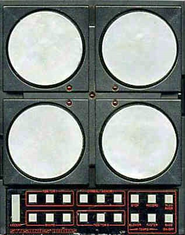

Mattel Synsonics Drums
The toy drum machine that Kraftwerk took seriously

Overview
The Mattel Synsonics Drums is an electronic drum synthesizer released by Mattel Electronics in 1981. Housed in a black plastic case (8 × 9 × 2 inches), it features four 3-inch rubber velocity-sensitive pads on the top surface, designed to be played with drumsticks. Beneath the pads are piezo pickups, and the unit is built sturdy enough to withstand heavy stick playing — demonstrated by keyboardist Patrick Moraz at a trade show. The sounds (two toms, snare, cymbal, bass drum) are fully analog — no PCM samples — producing distinctive synthetic drum tones: the snare is "a short splash of white noise," the cymbal a burst of high-pitched pink noise (described by one reviewer as sounding "like someone chucking a trayful of Waterford crystal through a plate glass bus shelter"). Despite its toy origins and £99 price tag, the Synsonics was adopted by professional musicians including Kraftwerk. A custom LSI chip handles all sound generation, sequencing, and memory functions internally.
Deep dive
The Synsonics offers a unique hybrid manual/automatic interaction model. In manual mode, the player strikes the four rubber pads with drumsticks — piezo pickups detect velocity and trigger analog drum sounds. In automatic mode, each of the four sounds has three auto-repeat buttons that produce 2×, 4×, or 8× repetitions per beat. Combinations of these buttons create named patterns: Rock (slow + medium), Waltz (medium + fast), Offbeat (slow + fast), and more. The bass drum can only be played automatically — there is no dedicated bass drum pad, a design choice that reveals the instrument's ambiguous identity between drum machine and drum kit. A tap-tempo feature synchronizes the unit to external music by rhythmically pressing two buttons together; after a few repetitions, the microprocessor averages the intervals and resets the clock.
The 1983 review in Electronics & Music Maker identified six distinct performance modes: (1) Manual Play with sticks, (2) Manual Play with Repeat Buttons only, (3) Unaccompanied Memory Play (auto-pattern playback), (4) Accompanied Memory Play with sticks layered over running patterns, (5) Accompanied Memory Play with Repeat Buttons layered over patterns, and (6) Additive Memory Play — where the memory loop runs and subsequently played strokes are added to the pattern in real time. The player could layer manual stick playing over running auto-patterns, creating a performance mode somewhere between drumming and conducting.
Tom Tom 1 is tuneable over five octaves via a thumbwheel on the side — from subsonic bass to bird-call effects. Tom Tom 2 is a low-pitched syndrum sound with a downward bend. The cymbal can be changed to a closed hi-hat using the Accent button. Three memory slots store entire patterns, switchable during performance, but memory contents are lost on power-off — no battery backup. A domino display of 5 LEDs occupies the centre of the playing surface. The unit runs on six HP11 batteries or a 9V DC adapter, with stereo ¼-inch line out on RCA phono jacks.
Kraftwerk famously used the Synsonics, integrating its distinctive analog drum sounds into their live and studio setups. Mattel Electronics, expanding from toys into digital electronics and computers, produced a device that sat uneasily between consumer and professional categories. The internal construction uses a custom LSI chip for all sound generation, sequencing, and memory — making modification difficult. A "Pro" model was later released with improved pad design and memory backup. The Synsonics proved that a toy company could build a drum synthesizer that professional musicians would adopt, and its hybrid pad-plus-sequencer interface remains unique in the history of electronic percussion.
Team & pioneers
- Mattel Electronics. Consumer electronics division of Mattel, Inc.; expanding into digital electronics and computers in the early 1980s
- Patrick Moraz. Keyboardist/percussionist who demonstrated the Synsonics' durability at the 1982 'Hands On Show'
- Kraftwerk. German electronic music group who adopted and used the Synsonics in professional recordings